When Only Disassembly Has Answers
More often than not, when debugging a problem in Visual Studios, the combination of looking at/stepping through source code and using the various debug views (Autos/Locals, Watch, Callstack, etc.) are usually enough to eventually reveal the source of the issue. But sometimes that’s not enough, and a more in-depth view of what’s going on is needed, like the Disassembly view.
I was recently asked to take a look at an assertion failure one of our tools was experiencing on a build machine (tools that were scheduled to be released to production) to find out what was going on. The reason turned out to be simple enough, but something that only viewing the disassembly was able to reveal.
Attaching the debugger to the halted process revealed this simple callstack and point-of-failure:
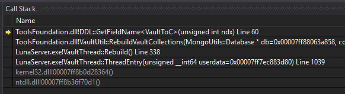
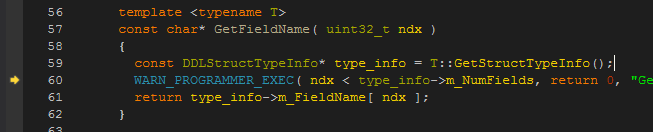
So the ndx < type_info->m_NumFields check was failing. What did the Locals view have to say about these values?
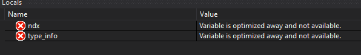
Nothing, unfortunately. Optimization during compilation made them unnecessary. Perhaps we can figure out what those values were from elsewhere in the code. The call site for GetFieldName() revealed it was being called with a value of 9 for ndx, and that the template type was VaultToC:
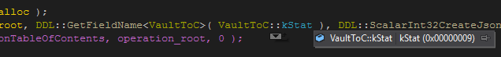
Following VaultToC::GetStructTypeInfo() led to the underlying data structure (and its type declaration):
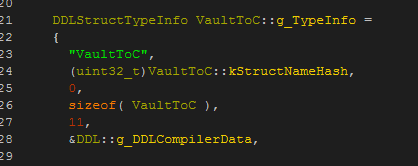
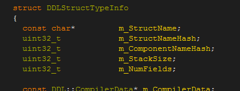
We can now see that m_NumFields is initialized with a value of 11. The data in this structure isn’t supposed to change, so assuming that’s true, the ndx comparison check should pass (9 < 11). But clearly that’s not happening, so what gives? Trying to verify the contents of g_TypeInfo reveals more compiler optimizations:
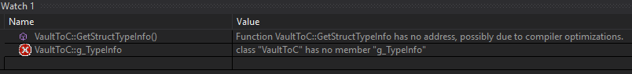
At this point we need to view the disassembly. Everything on the surface looks kosher, and optimizations make it impossible to get any further insight from the other higher-level views.
Here’s the disassembly at the comparison check:
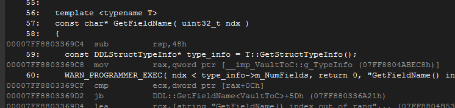
The instruction cmp ecx,dword ptr [rax+0Ch] is what does the comparison. Just above that, we can see rax is loaded with the address of VaultToC::g_TypeInfo, and ecx is loaded with the value of 9 just before the call to GetFieldName:
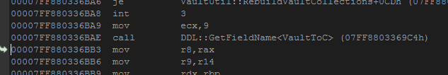
So we’d expect rax+0Ch to be the address of m_NumFields within the g_TypeInfo struct…except it’s not! 0xc is a 12 byte offset, and looking at the DDLStructTypeInfo declaration again, that offset corresponds with the m_ComponentNameHash member (initialized with a value of 0, hence the comparison failure):
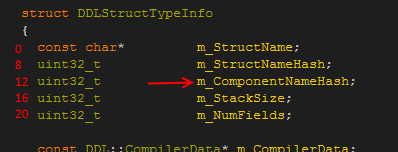
The offset for m_NumFields should be 20 bytes, not 12; why is it 8 bytes short? This leads to an inescapable conclusion: at the time of compilation, the compiler thought m_NumFields was in a different location. Which then leads to the question: did DDLStructTypeInfo change recently? A look at the Perforce history of the file shows that it had:
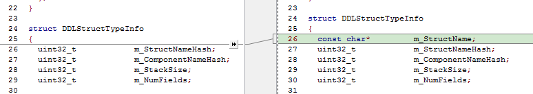
An 8 byte pointer was recently added, which accounts for the discrepancy. And if you noticed from the callstack at the beginning, the failure happens in a dependent DLL, which is of course separate from the executable. And therein lies the final piece of the puzzle: the DLL version being loaded by the executable was not built with the updated header, causing it to operate on a data structure that had. All it required was a simple solution of “ensure the DLL is compiled with latest code” (our project/build system is designed to prevent these things from happening, but in this particular case for some unknown reason, the DLL failed to recompile itself).
This was only a simple example of the usefulness of the Disassembly view, but shows just how invaluable it can be in diagnosing problems. Keep it in your debugging toolbox!
-- Evan Hatch (Associate Engine Programmer)